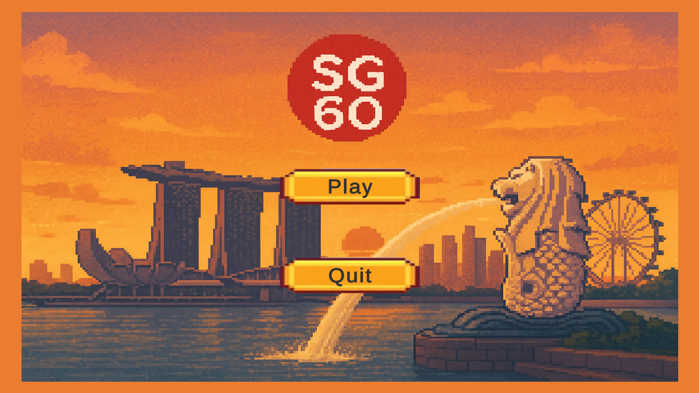

Movement System Me
Full platformer movement with walk, run, dash, jump, double jump, wall jump, and wall slide. Built to feel responsive across all of Singapore's historical levels, each with their own terrain and layout.

Joel Chew
Aspiring Game Developer
IGN: Skgry3
Projects
Skills
More

School Group Project — 2 Weeks
A 2D side-scrolling platformer where a Singaporean man is thrown back in time, forced to fight through pivotal moments in Singapore's history — from Sang Nila Utama's landing to the Hock Lee Bus Riots — before finding his way home.

Full platformer movement with walk, run, dash, jump, double jump, wall jump, and wall slide. Built to feel responsive across all of Singapore's historical levels, each with their own terrain and layout.
Players can chain up to 4 consecutive melee attacks, each with a distinct animation and hit. A ranged shoot option built by a teammate adds flexibility for dealing with enemies at a distance. Enemies fight back with either close-range attacks or projectiles depending on their type.
The game tells the story of Zhe Hao — a modern Singaporean man accidentally sent back in time. Cutscenes and a dialogue system guide the player through each era, giving historical context and keeping the narrative moving between combat sections.
Between levels, players spend resources at a shop to buy healing items and upgrades. An inventory system with 7 hotbar slots lets players manage and use items mid-run, while the upgrade UI gives stat boosts that carry through to later eras.
Submitted and completed. The game covers five historical periods across Singapore's past, each with unique enemies and context. Built in two weeks with a focus on getting core systems functional — some rough edges remain but all major systems are in and working.
Group Project — Team of 4
Movement System
Built and owned by me. Handles walk, run, dash, jump, double jump, wall jump, and wall slide — all driven by a single player controller. Each movement state transitions cleanly into the next, keeping the feel tight across varied level layouts and terrain types.
Melee Combat & Health Interface
Built and owned by me. The 4-hit melee combo is handled by a combat controller that tracks combo state and applies damage on hit. Player and enemy health both implement a shared interface, keeping health logic consistent and making it straightforward to extend to new enemy types. Ranged combat was handled by a teammate building on the same interface.
Upgrade System
Built and owned by me. Players access an upgrade UI mid-run to spend resources on stat boosts. Upgrades persist across scene transitions, feeding into the same health and combat interfaces used by the rest of the game's systems.
Enemy FSM & Rioter Enemy
The base enemy class and Finite State Machine architecture were built by a teammate. I implemented the Rioter enemy on top of that foundation — a close-range attacker inspired by the Hock Lee Bus Riots, with its own patrol, chase, and attack states wired into the shared FSM.